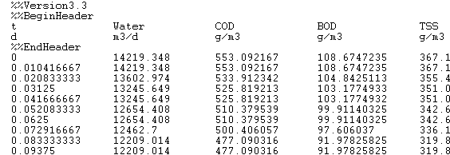
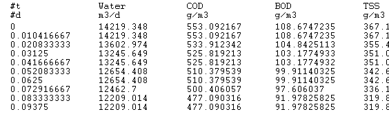
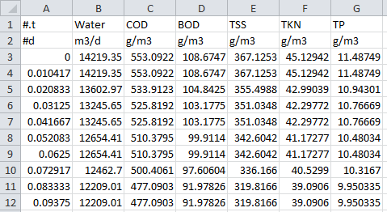
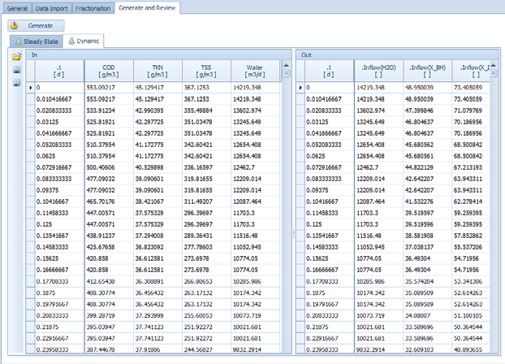
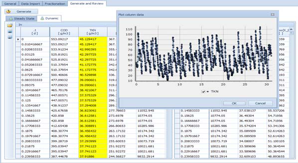
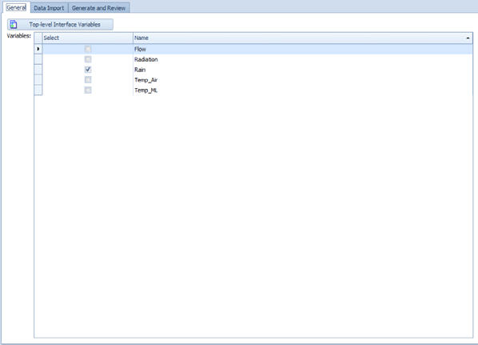
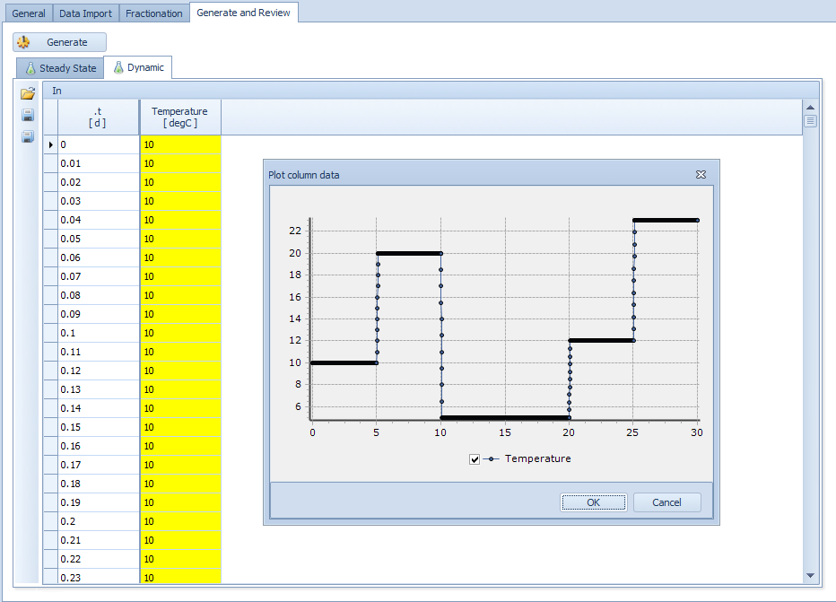
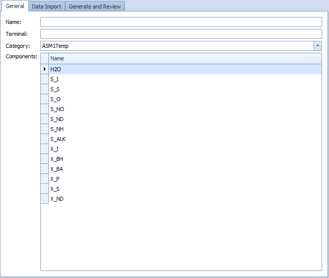

Results and Output¶
Summary: How WEST writes simulation output to files, how to view results after a run, and how to export data to Excel.
Prerequisites: A configured simulation or advanced experiment (SA, UA, PE). See Running Simulations.
Overview¶
WEST writes simulation results to output files as a run executes. Each experiment has an Output tab in its Simulation Properties where you configure which quantities are recorded and at what interval. After a run completes, results can be inspected in the Runs tab, plotted as time series, or exported to Excel.
Configuring simulation output¶
To record variables from a simulation:
- Go to Insert → Output → Data Output block and drop it onto the layout canvas, or open an existing experiment's Simulation Properties and switch to the Output tab.
- Double-click the Data Output block (or the Output tab) to open the output configuration dialog.
- In the Variables list, select the variables to record. You can also drag variables directly from the Block Details or Block Summary pane onto the Output tab.
- Set the File path — type a full path to the output file or click the folder icon to browse. The folder must already exist; WEST will not create it automatically.
- Set the Communication interval — how often (in simulation time units) a value is written. Use a coarser interval (e.g. 0.0417 d = 1 hour) for long runs to keep file sizes manageable.
- Click OK. Run the simulation. Output is written continuously as the run progresses and is available for plotting as soon as the run completes.
Output file settings¶
Configure which variables are written to output files in Simulation → Output Configuration. The dialog has two tabs:
- Variables: add or remove state variables from the output list. Use the block tree to navigate to specific blocks. Check "All variables" to capture everything (increases file size significantly).
- Settings: set the communication interval (time between saved output points), choose binary (
.out) or text format, and set the file name prefix. Binary format is faster to write and smaller; text format is directly readable in a spreadsheet.
| Setting | Description |
|---|---|
| File name pattern | Base name for the output file. Use {} as a placeholder for the run number (e.g. run_{}.out). |
| Communication interval | How often WEST writes a value to the file (in simulation time units). |
| Interpolation | When enabled, WEST interpolates values at the exact communication interval rather than using the nearest solver step. |
| Use Display Units | When enabled, values are written in the display units configured for each quantity rather than the model's internal units. |
Adding quantities to record¶
To add a variable to the output list, open Simulation → Output Configuration → Variables tab. Expand the block tree on the left to find the block of interest. Select one or more variables (hold Ctrl for multiple) and click Add →. The selected variables appear in the right-hand "Record" list. Variables already in the list are highlighted. Click OK to save changes — they take effect on the next simulation run.
Quantities can also be added in two other ways:
- Drag and drop a variable from the Block Details or Block Summary window onto the Output tab.
- Use the + / – buttons in the Output tab to add or remove quantities manually.
Buffer output (WESTforAUTOMATION)¶
Buffer output is used by the WESTforAUTOMATION API to read simulation results programmatically without writing to disk. Variables added to the buffer output list are held in memory during the run and accessible via the API's get_variable() method. Buffer output is faster than file output for batch workflows where results are processed in-code rather than inspected manually.
Additional buffer output settings:
| Setting | Description |
|---|---|
| Start time | Simulation time at which buffered output begins. |
| Stop time | Simulation time at which buffered output ends. |
| Communication interval type | Linear (fixed interval) or Log (logarithmically spaced intervals). |
Viewing results after a run¶
Results are displayed automatically in the Output panel when a run finishes. The panel has two tabs: Plot (time-series graphs) and Table (numerical values). Click any state variable in the variable tree to add it to the active plot. Multiple variables can be overlaid; use the right-click menu to assign a secondary Y-axis.
Results plot panel¶
After a run completes, click the Results tab at the bottom of the WEST window to open the results workspace. To create a time-series plot:
- In the Model Explorer (left panel), expand the block tree to find the variable you want to plot.
- Drag the variable from the Model Explorer (or from the Block Details pane) onto the plot area. A new plot series is created automatically.
- To add more variables to the same plot, drag additional variables onto the existing plot — they are overlaid as separate series.
- Right-click anywhere on the plot to access configuration options:
- Configure Axes — set axis labels, units, and scale (linear or logarithmic).
- Add Series — add a variable to the current plot from a dialog rather than by dragging.
- Change Plot Type — switch between line, scatter, bar, and step chart types.
- Export — save the plot as an image (PNG, BMP) or export the underlying data as CSV.



Table output¶
To view results as a structured table:
- Go to Insert → Output → Table Output block and drop it onto the layout.
- Double-click the block to open its configuration dialog.
- In the Columns list, add the variable names you want to appear as table columns (e.g.
S_NH,S_NO,COD). - Set the Row frequency — how often (in simulation time units) a row is written to the table (equivalent to the communication interval for file output).
- Click OK and run the simulation.
- After the run, open the Results tab. The table appears as a sortable, scrollable grid with one row per output time step and one column per configured variable. Click any column header to sort by that variable.

Gauge widget¶
Dashboard gauges provide a real-time numeric readout of key variables during or after a run.

Runs tab (advanced experiments)¶
In Scenario Analysis, Uncertainty Analysis, and Parameter Estimation experiments, the Runs tab displays a matrix with:
- One row per completed run.
- Columns for each varied parameter value used in that run.
- Columns for each computed objective value.
- The best run (lowest overall objective) is highlighted.
From the Runs tab you can:
| Button | Action |
|---|---|
| Generate | Create a new sample or parameter grid. |
| Export | Export the runs matrix to Excel (XLS or XLSX). |
| Print the runs table. | |
| Copy Values | Copy the selected run's parameter values back into the simulation. |
| Run | Execute the experiment. |
| Plot (SA only) | Generate instant histograms of objective values across runs. |
Criteria types¶
Criteria define how raw time-series output is aggregated into scalar objective values. WEST supports four types:
Time series criteria¶
Aggregate simulated data across time for a single run. Examples: mean effluent NH4 over the last 7 days of a run, maximum TSS over the entire run.
Run criteria¶
Run criteria define stopping conditions for a simulation beyond the end time. A run stops early if any criterion is met. Example criteria: effluent NH₄ < 1 g N/m³ for 3 consecutive days (steady-state detection), or effluent TSS > 30 g/m³ (alarm condition). Run criteria are configured in the Experiment Settings dialog under the Criteria tab. See Objectives & Run Criteria for the full workflow.
Available statistics for cross-run aggregation:
- Minimum and maximum
- Mean and standard deviation
- Median
- Percentiles (user-defined)
- Skewness and kurtosis
BVDF criteria (Bound Value Duration Frequency)¶
Analyse how often and for how long a variable violates upper or lower bounds. Reports:
- Number and percentage of lower-bound violations.
- Number and percentage of upper-bound violations.
- The same cross-run statistics as Run criteria (min, max, mean, std dev, median, percentiles, skewness, kurtosis).
Classification criteria¶
Classify output values into user-defined classes (e.g. "good / acceptable / poor"). The same cross-run aggregation statistics as Run criteria are available for each class.
Exporting results¶
Right-click any variable in the results tree and choose Export. A dialog lets you select the time range and format. Results can also be bulk-exported via File → Export Results.
Export to CSV¶
Exports selected variables as comma-separated values. Each column is one variable; rows correspond to communication timesteps. The header row contains variable names including units.

Export to Excel¶
Exports to .xlsx format with one sheet per experiment run. Variable metadata (units, block path) is written to a summary sheet. Requires Microsoft Excel or a compatible reader.

Output file configuration¶
Configure which variables are saved by opening Simulation → Output Configuration. Add or remove variables from the output list, set the communication interval, and choose binary (.out) or text format. Saving fewer variables reduces file size and slightly improves run speed.

Export runs matrix to Excel¶
- Open the Runs tab of the experiment.
- Click Export.
- Choose XLS or XLSX format and a save location.
- The exported file contains one row per run with parameter values and objective values.
Copy best run back to simulation¶
- In the Runs tab, select the highlighted best run (or any run of interest).
- Click Copy Values.
- The parameter values for that run are written back to the base simulation, ready for further analysis or a single confirmatory run.